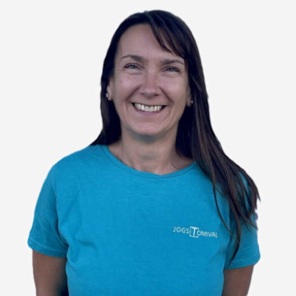

Kovács Ferenc
Szakmai bemutatkozás
Kovács Ferenc vagyok, a JogsiTomival Autósiskola „B” kategóriás gyakorlati oktatója, magyar és angol nyelven vállalom az oktatást. 1987 óta sok millió kilométert vezettem különféle járműveken, köztük motoron is. Egész Európát bejártam többször, így sokféle szemszögből ismerem a közlekedést. A mai napig, csak úgy beülök az autómba vagy felülök a motoromra és kikapcsolódásként megyek egy kört. Imádok vezetni. Ezt az életérzést szeretném átadni, egy magabiztos tudással a jövő járművezetőinek. Meggyőződésem, hogy csak azt tudjuk jól csinálni, amit szeretünk is. Az oktatásokon fontos számomra, hogy mindig nyugalom és jó hangulat legyen, egy jó autóban. Oktatási tapasztalattal a hátam mögött vágtunk bele közösen feleségemmel ebbe a szép szakmába. Azóta már több ezer gyakorlati órán vagyok túl a tanítványaimmal. Szerencsésnek tartom magam, mert számomra a munkám a hobbim is. A modern, mai kornak megfelelő, magabiztos tudást igyekszem átadni tanítványaimnak.

Kovács Nóra
Szakmai bemutatkozás
Kovács Nóra vagyok, a JogsiTomival Autósiskola „B” kategóriás gyakorlati oktatója, magyar és angol nyelven vállalom az oktatást. 1994-ben szereztem a jogosítványomat, azóta napi szinten vezetek. Korábban stewardessként dolgoztam, a fél világot beutaztam, a legtóbb helyen autót is béreltem, így megismerhettem a különböző közlekedési kultúrákat szerte a világon. Férjemmel együtt döntöttünk úgy, hogy a rengeteg balesetmentesen levezetett kilométerrel a hátunk mögött, a tudásunkat és tapasztalatunkat másoknak is szeretnénk átadni. Fontos számomra, hogy a vezetési órák élvezetesen, nyugodt légkörben teljenek. Úgy gondolom, hogy a tanulás így a leghatékonyabb. Arra törekszem, hogy Tanulóim jól képzett, felelősségteljes járművezetőkké váljanak. Jelenleg egy KIA Vengával oktatok, találkozási pontok és oktatási időpontok tekintetében rugalmas vagyok.